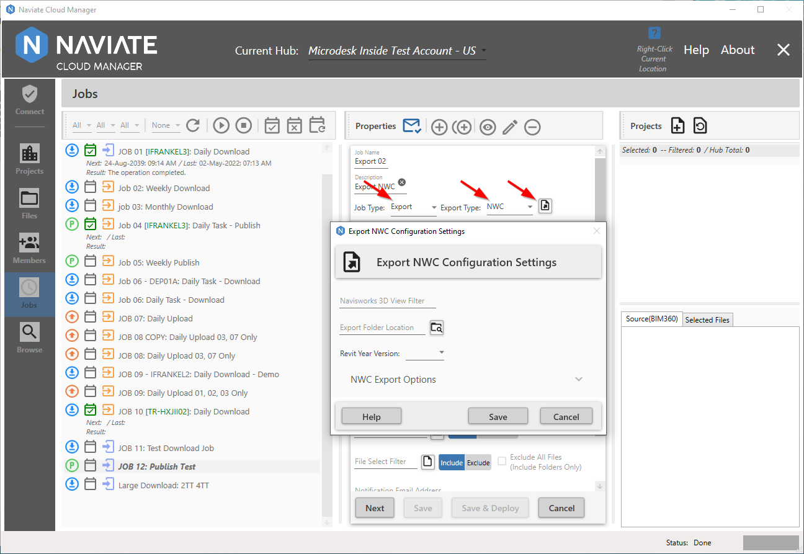
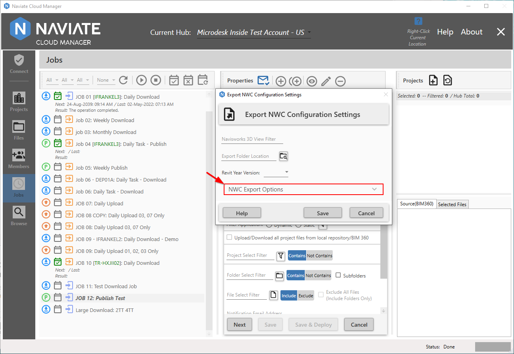
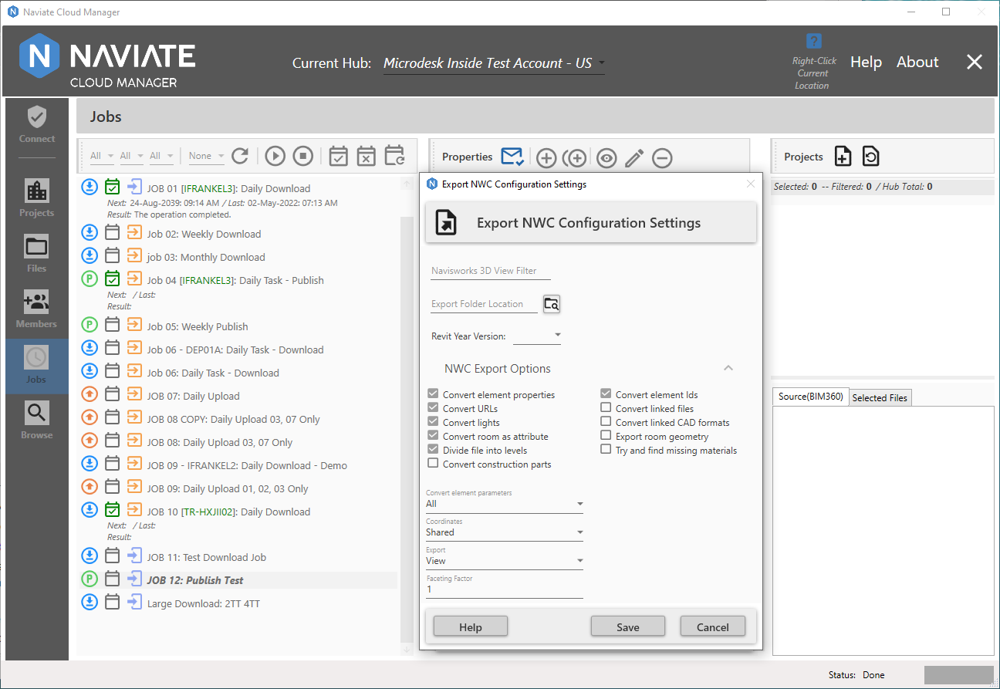
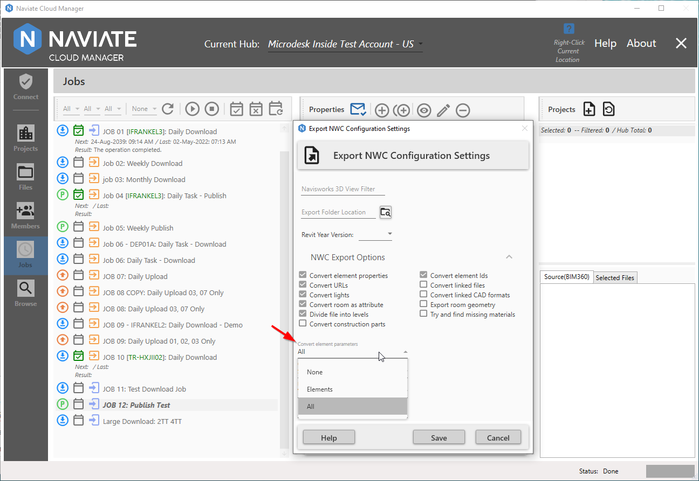
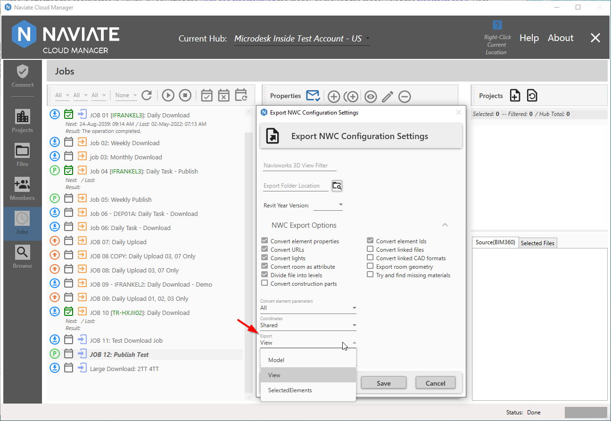

NWC
NWC allows the user to export NWC files from a selected Revit® model, while also allowing the user to filter select which of the model's 3D views are to be exported. The user is then able to specify the location to which the file will be saved. Each model has it's own folder created in the specified Export Folder Location. The user also has the ability to modify the NWC Export Options via the dropdown selection to provide export flexibility.
With NWC selected, press the button to the right of the Export Type field to bring up the Export NWC Configuration Settings dialog window.

Navisworks 3D View Filter
The Navisworks 3D View Filter allows the user to filter select which of the model's 3D views are to be exported.
Export Folder Location
The Export Folder Location makes it possible to specify the location where the files will be saved.

NWC Export Options
Naviate Cloud Manager contains additional NWC Export Options that are set to default values. If these default values are acceptable, they need not be changed.
However, to view the settings of the default options and make any necessary changes, click anywhere on the NWC Export Options label (on the left), down arrow (on the right) or anywhere in between to expand the window. To collapse the bottom portion, simply click it again anywhere on the same row.

Viewing the NWC Export Options shows the current settings. To use these settings, nothing more need be done. However, these settings may be changed to suit the user's need. These may vary slightly depending on the Revit® version. These are the same options found in the Navisworks Revit® file reader options page (see Autodesk's Navisworks Help Documentation)
When editing is complete, press Save or Cancel. These settings can be modified at any time prior to deploying the job. Once the job has been deployed, however, they cannot be changed. To change the settings, the job will first need to be un-deployed; the settings changed and saved; then the job must be redeployed.
Convert element properties
Select this check box to convert the Properties of each element in the Revit® (RVT) file into Autodesk Navisworks (NWC) Properties. Leave this check box clear to retain the original Revit® Properties.
Convert urls
Indicates whether URL property data is converted. By default, this check box is selected and the hyperlinks are supported in the converted file.
Convert lights
Check this option to export the lights contained in the Revit® file into Navisworks. By default, this check box is clear.
Convert room as attribute
Indicates whether room attributes are supported. By default, this check box is selected, and data for each room converts into a single shared room attribute.
Divide file into levels
Indicates whether the Revit® file structure is split into levels on the Selection Tree. By default, this check box is selected, and Revit® files are organized by File, Category, Family, Type, and Instance.
Convert construction parts
When using the Revit® 2019 Construction Modeling and Assemblies feature, there is an option to export either the original object or construction parts into Autodesk Navisworks. Select this box to export the construction parts; clear the check box to export the original object.
Convert element ids
Select this check box to export the ID numbers for each Revit® element. When this check box is clear, the file reader ignores IDs.
Convert linked files
Revit® projects can embed external files as links. When this check box is selected, linked RVT files will be included in the exported NWC file. By default, this check box is clear.
Note — Only linked RVT files can be exported; linked DWGs and any other file formats are not supported.
Convert linked CAD formats
Revit® projects can embed external files as links. When this check box is selected, linked CAD files such as DXF, DGN, SAT and Sketchup format will be included in the exported NWC file. By default, this check box is clear.
Export room geometry
When using Revit® 2019, there is an option of using either the original room geometry or converting it into construction sub-parts in Autodesk Navisworks. By default, this check box is selected and room geometry is converted into sub-parts. Clear the check box to keep the original room object.
Try and find missing materials
When this check box is selected (the default option), the file reader looks for a match for the materials missing from the export.
Note — If any inappropriate materials are applied to the model geometry as a result, clear this check box to fix the problem.

Convert element parameters
Specifies how Revit® parameters are read. Select from the following options:
- None - the file reader does not convert parameters.
- Elements - the file reader converts parameters for all found elements.
- All - the file reader converts parameters for all found elements, including the referenced elements. As a result, extra property tabs are available in Autodesk Navisworks.
Coordinates
Specifies whether to use shared or internal coordinates for file aggregation. By default, shared coordinates will be used, which are established in Revit®.
- Internal - Loads files with an origin of 0,0,0 using Revit® Project North. Note: This is the same as the Revit® Project Base Point.
- Shared - Loads files using the shared coordinates specified in the Revit® file. Navisworks converts the shared coordinates in to a transform that is applied to the model, reflecting any X,Y,Z offset from origin, and any rotation to True North specified in Revit®.
Note — If models from Revit® appear misaligned when using the Shared option, it may be because the shared coordinates in a Revit® host model have not been published to any linked models. This causes the linked models to use Revit®'s default Project Internal coordinates, and therefore appear misaligned in Navisworks. It is recommended that model authors agree on a coordinate system before creating and sharing models to avoid this. Alternatively, the model can be re-positioned in Navisworks without affecting the coordinates in Revit®, by adjusting the units and transforming the model, or moving the model using the transform tools. Once you have aligned the models as required, save the file as an NWF so that the transforms are reapplied when the file is opened.

Export
Specifies what to convert to Navisworks format:
- Model - Converts by the whole model project.
- View - This setting is default, and converts by the views selected.
- SelectedElements - Converts by selected elements.
Faceting Factor
Enter the required value to control the level of faceting that takes place. The faceting factor must be greater or equal to 0, where 0 results in the faceting factor being turned off. The default value is 1. To get twice the number of facets, double this value. To get half as many facets, halve this value. Larger faceting factors result in more polygons to a model and larger Autodesk Navisworks files.
When editing is complete, press Save or Cancel. These settings can be modified at any time prior to deploying the job. Once the job has been deployed, however, they cannot be changed. To change the settings, the job will first need to be un-deployed; the settings changed and saved; then the job can be redeployed.